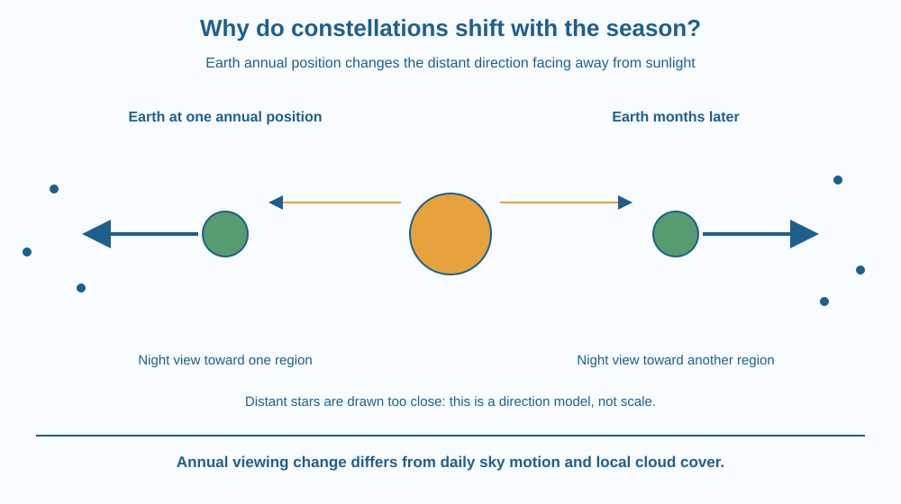

Explain why the night sky available at a given time changes through the year. Distinguish daily apparent motion from changing seasonal viewing direction. Use Earth's position around the Sun without repeating the force explanation for its orbit or treating constellations as nearby physical groups.
A constellation visible in the evening during one part of the year may be difficult to see at the same clock time several months later. The stars did not suddenly switch off or move to an entirely new neighbourhood in a few weeks.
Earth's nighttime viewing direction has changed relative to the distant stars. Some regions now lie closer to the Sun's direction in our sky and are hidden by daylight, while other regions face the night side.
The clue is the phrase same time of night. A fair seasonal comparison must specify time and location as well as the calendar period.
A constellation is a recognised region or pattern used to describe the sky. The stars forming a familiar pattern can be at very different distances. Their apparent grouping does not necessarily mean they are neighbours in space.
Earth rotates, producing daily apparent motion of the sky. Earth also changes position around the Sun over the year. Today's lesson focuses on how this annual position change alters which distant directions are accessible during nighttime.
At local midnight in a simplified model, the observer's night-facing direction points broadly away from the Sun. When Earth is on another part of its yearly path, the direction away from the Sun points toward a different part of the distant-star background.
A star pattern close to the Sun's apparent direction is difficult to see because the bright daytime sky overwhelms it. The stars remain present and continue emitting light; their visibility from the ground has changed.
Over weeks, familiar star patterns also appear earlier in the evening under comparable observing conditions. This gradual shift links daily viewing with the annual change. We do not need an exact minutes-per-day value to explain the geometry accurately.
Latitude matters. Some stars can remain above the horizon throughout a daily rotation for particular observers, while others never rise there. Therefore “every constellation disappears each season” is too strong. Seasonal visibility depends on both location and the sky region considered.
Clock time, time zone and the precise observing date can complicate a comparison. A classroom model should state that it is simplifying these details rather than pretending a midnight diagram predicts every exact local appearance.
The axial tilt also affects other seasonal phenomena, but changing nighttime star directions does not require blaming the stars' disappearance on temperature or monsoon clouds. Weather changes actual observing opportunities, while the geometry explains the underlying annual pattern even in a clear sky.
Draw the Sun at the centre of a page and distant star patterns around the edges. Put Earth at two opposite positions. At each, draw a night-view arrow pointing away from the Sun.
The arrows point toward different background regions. A star pattern aligned with one arrow is on the night-facing side at that position but may lie in the Sun-facing direction at the other.
Now distinguish this top-down annual picture from a daily rotation drawing. Both motions contribute to what an observer sees, but they answer different questions. One explains change during a night; the other helps explain change between comparable nights months apart.
The SVG shows Earth at two positions around the Sun, with distant-star symbols placed beyond the immediate system. Night-view arrows point outward from the Sun at each position and toward different background patterns.
A separate small label distinguishes daily sky motion from the annual viewing shift. The stars are drawn much too close for visibility; the diagram explicitly states that spacing is not to scale.
The graphic does not claim that the four drawn stars form one physically bound group or that every observer at every latitude sees the same constellations at the same season.

Indian sky guides often identify good seasonal viewing periods for familiar patterns. Their usefulness depends on the observer's location, time and viewing conditions. A sky photograph without those details can be difficult to compare with a local evening.
Monsoon cloud cover can hide stars, but that weather effect differs from the annual geometry. A constellation can be on the night side and still invisible behind clouds, or it can be near the Sun's direction even under a perfectly clear sky.
Students should use a printed sky chart or supervised existing observations. No night travel, rooftop access or direct viewing near the Sun is required for this lesson.
Use paper, a central Sun symbol and four star-pattern symbols near the page edges.
The model shows directions, not a scale map or exact observing calendar. Do not assign real constellation names unless a suitable chart supports the arrangement. The activity explains why a seasonal change is possible without pretending to predict every local sky from four arbitrary symbols.
Why does a star being hidden in daylight not imply that it stopped emitting? Distinguish the source from the conditions under which an observer can detect it.
Now compare two observers at different latitudes. Which part of the basic annual model can they share, and which visibility details depend on their horizons? This keeps the model useful without turning one classroom viewpoint into a universal sky map.
What annual change helps explain seasonal constellation visibility?
Answer: A — The changing annual geometry points nighttime viewing toward different distant regions.
Why can stars near the Sun direction be hard to see?
Answer: B — Visibility depends on the observing background as well as the source light.
A night-side constellation is hidden by monsoon cloud. Which statement is correct?
Answer: C — A suitable sky direction can still be blocked by local observing conditions.
Create a two-date explanation for a star pattern's changing evening visibility. State the same observer location and a comparable time of night, then show Earth in different annual positions.
Include one limitation involving horizon, weather or exact clock time. Your explanation must not say the stars stop shining in the unfavourable season or use the pattern's apparent shape as evidence that all its stars are close together in space.
Night points in a direction. As Earth moves around the Sun, the direction facing away from sunlight changes relative to the distant background. Thinking of nighttime as a moving viewing window makes the seasonal sky easier to understand than imagining the constellations taking turns to exist.
Earth's changing annual position shifts the night-facing view toward different star regions; location, time and weather determine what an observer can actually see.